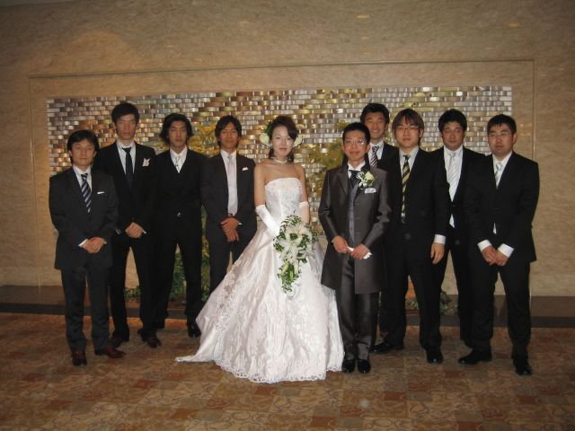
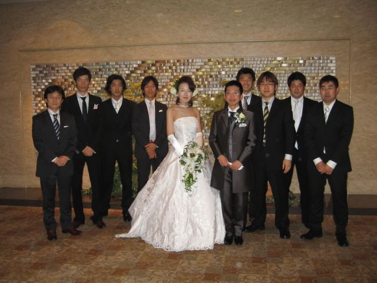

2007.03.27 Tuesday
結婚式挙げました
3/24（土）に
品川のホテルで結婚式を挙げました。
みんなに沢山祝ってもらえて本当に嬉しくて、
朝起きても二人とも感動と感謝でぼんやりしてしまいました。
友達へ＞
余興＋遅くまで付き合ってくれて本当にありがとうございました。
とってくれたビデオや写真たのしみにしてますー。
２〜３月は本当にバタバタで、
何かと周りの人にご迷惑をおかけしてしまいました。
結婚式の準備は大変だけど、終わったあとは、結婚式をして本当に良かったー、とつくづく思います。
ぜひ祝ってくれたみんなに恥じないようにこれからも頑張っていきたいです。

中学からの友人と
みんなに沢山祝ってもらえて本当に嬉しくて、
朝起きても二人とも感動と感謝でぼんやりしてしまいました。
友達へ＞
余興＋遅くまで付き合ってくれて本当にありがとうございました。
とってくれたビデオや写真たのしみにしてますー。
２〜３月は本当にバタバタで、
何かと周りの人にご迷惑をおかけしてしまいました。
結婚式の準備は大変だけど、終わったあとは、結婚式をして本当に良かったー、とつくづく思います。
ぜひ祝ってくれたみんなに恥じないようにこれからも頑張っていきたいです。

中学からの友人と
- by narisan25
- 日記
- comments(4)
- trackbacks(0)
- 2007.03.27 Tuesday
- 18:06

- コメント
- ご結婚おめでとうございます！
なんとなく、タイトルに目がいき、読ませていただきました。 ほんとうにうれしい様子がわかります(≧∇≦)
自分の時のことをちらっと思い出しました♪
これから、長い人生、色々あると思いますが、お互いがんばりまようね！
お二人に、（*^。^人^。^* ）シアワセ！有れ！！ -
- りん
- 2007.03.27 Tuesday 23:50
- なり。
おめでと。
たまたま通りがかった、おじさんです。
って、何回おめでとうと、言ったでしょう・・・。
んま、いい話だから、良しとするか〜。 -
- ヒデフミ
- 2007.03.29 Thursday 00:16
- ご結婚おめでとう！
お幸せに。 -
- milky
- 2007.03.29 Thursday 14:06
- りんさん＞
コメントありがとうございますー
ぜひがんばっていきましょう(^o^
milkyさん＞
ありがとうございますー。
今度機会がありましたらご紹介しますね。
ヒデ＞
こちらからもヒデにおめでとう、といえる日を楽しみにしてますー。 -
- なりさん
- 2007.04.02 Monday 15:51
- コメントする
- この記事のトラックバックURL
- トラックバック
- Calendar
-
1 2 3 4 5 6 7 8 9 10 11 12 13 14 15 16 17 18 19 20 21 22 23 24 25 26 27 28 29 30
- Selected Entries
-
- 結婚式挙げました (03/27)
- Categories
- Archives
-
- March 2010 (8)
- February 2010 (6)
- January 2010 (1)
- November 2009 (2)
- October 2009 (5)
- September 2009 (2)
- August 2009 (6)
- July 2009 (6)
- June 2009 (4)
- May 2009 (1)
- April 2009 (1)
- February 2009 (5)
- December 2008 (4)
- November 2008 (2)
- October 2008 (2)
- September 2008 (3)
- August 2008 (5)
- July 2008 (4)
- June 2008 (3)
- May 2008 (6)
- April 2008 (3)
- March 2008 (5)
- February 2008 (5)
- January 2008 (4)
- December 2007 (4)
- November 2007 (1)
- October 2007 (5)
- September 2007 (6)
- August 2007 (10)
- July 2007 (12)
- June 2007 (3)
- May 2007 (2)
- April 2007 (3)
- March 2007 (7)
- February 2007 (10)
- January 2007 (4)
- December 2006 (7)
- November 2006 (3)
- October 2006 (9)
- April 2005 (1)
- March 2005 (1)
- Recent Comment
-
- 郵貯限度額引き上げ の目的はなんだろう？
⇒ なりさん (03/31) - 郵貯限度額引き上げ の目的はなんだろう？
⇒ ただ (03/31) - 英語 お奨めの教材 会話能力向上むけ
⇒ 楽訳中国語辞書 (03/30) - 外務員一種合格
⇒ わかこ (03/17) - 転職します！
⇒ なりさん (02/04) - 転職します！
⇒ のり (02/02) - 近所の雀荘での殺人事件とマージャン業界
⇒ なりさん (10/26) - 近所の雀荘での殺人事件とマージャン業界
⇒ なまぷー (10/21) - 40年ぶり発表の貧困率１５・７％について考えてみる
⇒ yutakarlson (10/21) - 浜松まで車で片道４０００円
⇒ (10/21)
- 郵貯限度額引き上げ の目的はなんだろう？
- Recent Trackback
-
- 証券アナリスト・証券分析の勉強開始
⇒ あらかじめサーチ！ (01/28) - 証券アナリスト ２科目合格
⇒ クチコミコミュニケーション (11/16) - 英語 お奨めの教材 会話能力向上むけ
⇒ ゆうな的ブログ？ (03/15) - １つ★の航空会社？ 航空会社のランキング
⇒ Niko777 (03/13) - 公用語が英語の外資で必要なTOEICの点数は？
⇒ TOEIC満点対策法 (02/21) - 不動産鑑定士 平成19年度試験日程
⇒ 年金生活になっても豊かに暮らせ る方法 (02/15)
- 証券アナリスト・証券分析の勉強開始
- Recommend
-

- Recommend
- Recommend
- Recommend
- Links
- Profile
- Search this site.
- Mobile